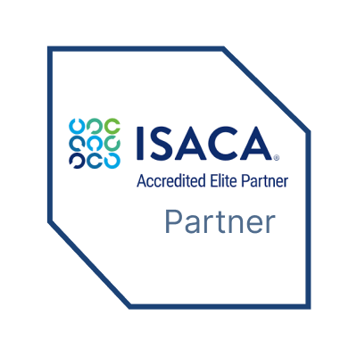

ISACA Training Courses
Develop the governance, risk management, cybersecurity, and information systems auditing expertise organizations need to protect critical business assets and support regulatory compliance. Our ISACA training courses are designed for auditors, security professionals, risk managers, compliance specialists, IT leaders, and technology professionals seeking practical knowledge and preparation for industry-recognized ISACA certifications. Through instructor-led learning, real-world examples, and hands-on exercises, participants develop the skills required to work confidently with governance frameworks, risk management methodologies, cybersecurity programs, and enterprise compliance initiatives.
- Build expertise in information systems auditing, governance, risk management, and cybersecurity
- Comprehensive certification preparation for ISACA certification exams
- Practical exposure to governance frameworks, risk assessment methodologies, and security management practices
- Learn industry-recognized best practices used by organizations worldwide
- Specialized learning paths for auditors, security managers, risk professionals, compliance specialists, and IT leaders
- Receive one-to-one guidance from experienced ISACA trainers to help you choose the right certification path and achieve certification success

Hands-On Labs
Certification Exam Readiness
Career Support
Expert Trainers
Overview
ISACA certifications are among the most respected credentials in information systems auditing, cybersecurity, governance, risk management, and compliance. Organizations increasingly rely on certified professionals to strengthen security programs, manage business risks, maintain regulatory compliance, and improve governance practices. As regulatory requirements and cybersecurity challenges continue to evolve, demand for professionals with ISACA certifications continues to grow across industries worldwide.
This training program provides a comprehensive introduction to information systems auditing, security governance, risk assessment, compliance management, and enterprise security operations. Participants gain practical knowledge of how organizations identify risks, implement controls, manage security programs, and protect critical information assets. Whether you are advancing your career or preparing for an ISACA certification, this training helps build the expertise required for long-term professional success.
ISACA - What You Will Learn
-
Information Systems Auditing and Control
Understand audit methodologies, control frameworks, compliance requirements, and techniques used to assess information systems, business processes, and organizational controls.
-
Governance, Risk, and Compliance Management
Learn how organizations establish governance structures, manage enterprise risks, maintain compliance, and align technology initiatives with business objectives.
-
Security Program Development and Management
Explore best practices for designing, implementing, monitoring, and managing enterprise information security programs that support organizational resilience.
-
Risk Assessment and Control Implementation
Understand how to identify, evaluate, mitigate, and monitor information technology and business risks while implementing effective control measures.
-
Enterprise Security and Business Resilience
Learn how organizations protect information assets, respond to security incidents, strengthen operational resilience, and support long-term business continuity objectives.
Training and Courses
CISA (Certified Information Systems Auditor)
The CISA course is designed for professionals responsible for auditing, monitoring, and assessing information systems and business processes. Participants learn auditing standards, governance principles, risk management practices, control implementation, and compliance requirements. Key topics include information system auditing, governance and management of IT, systems acquisition and implementation, operations management, asset protection, and audit reporting. Comprehensive certification preparation is included to support success on the CISA certification exam.

CISM (Certified Information Security Manager)
The CISM course focuses on information security governance, risk management, security program development, and incident management. Designed for experienced security professionals and managers, this training helps learners develop leadership skills required to manage enterprise security programs. Participants gain expertise in security strategy development, governance frameworks, compliance management, risk assessment methodologies, and incident response planning. The course includes certification-focused preparation aligned with CISM examination objectives.
CRISC (Certified in Risk and Information Systems Control)
The CRISC course is designed for professionals responsible for identifying, assessing, and managing enterprise technology risks. This training provides a structured understanding of risk governance, control implementation, risk monitoring, and business resilience. Learners develop expertise in enterprise risk management, risk assessment methodologies, control design, risk response planning, and reporting processes. Comprehensive exam preparation is included to support success on the CRISC certification exam.
Book Now
Get one to one coaching with expert trainers.
What You'll Achieve
Build practical auditing, governance, risk management, and cybersecurity expertise while preparing for recognized ISACA certifications through structured instructor-led training aligned with real-world business requirements.
Certification Readiness
Develop the knowledge, confidence, and exam preparation strategies required to successfully achieve ISACA certification goals and validate your professional expertise.
Governance & Risk Management Expertise
Strengthen your understanding of governance frameworks, compliance requirements, risk assessment methodologies, enterprise controls, and organizational risk management practices.
Information Security Knowledge
Learn security governance principles, information protection strategies, incident management processes, and security program development techniques used by modern organizations.
Career Advancement
Enhance your professional credentials and position yourself for high-demand roles in auditing, cybersecurity, governance, compliance, and enterprise risk management.
Industry Best Practices
Understand internationally recognized frameworks, methodologies, governance standards, compliance practices, and security principles used by leading organizations.
Training & Certification Support
Receive continuous guidance, certification preparation assistance, learning resources, and expert support throughout your training and certification journey.
Careers After Completing Your Training
Our ISACA training programs are aligned with current industry demands, helping professionals develop the expertise required for governance, risk, audit, and cybersecurity careers. Organizations across finance, healthcare, government, technology, and consulting sectors continue investing in risk management and cybersecurity initiatives, creating strong demand for ISACA-certified professionals.
CISA Training
-
Information Systems Auditor Evaluate information systems, assess controls, and ensure compliance with organizational and regulatory requirements.
-
IT Audit Consultant Conduct audit engagements, identify risks, and recommend control improvements for business processes and technology environments.
-
Compliance Analyst Support regulatory compliance initiatives while monitoring governance and control effectiveness across the organization.
CISM Training
-
Information Security Manager Develop and manage enterprise security programs aligned with business objectives, governance requirements, and risk management strategies.
-
Cybersecurity Manager Lead security initiatives, manage organizational risks, and oversee incident response activities across enterprise environments.
-
Security Governance Consultant Advise organizations on governance frameworks, compliance requirements, and security strategies that support business resilience.
CRISC Training
-
Risk Management Specialist Identify and assess technology risks while developing effective mitigation strategies that support organizational objectives.
-
IT Risk Consultant Support organizations in implementing risk management frameworks, control programs, and compliance initiatives.
-
Enterprise Risk Analyst Monitor business and technology risks while improving organizational resilience, governance, and operational effectiveness.
Why Choose Sitelearning America
We help professionals and organizations build practical governance, risk management, cybersecurity, and auditing expertise through expert-led training, certification preparation, and personalized learning experiences designed to support long-term career growth.
ISACA Training & Certification Preparation
Access structured learning programs that combine practical knowledge, industry best practices, and certification-focused preparation to help you succeed in ISACA certification exams, including CISA, CISM, and CRISC.
Expert Instructors
Learn from experienced auditors, cybersecurity professionals, governance specialists, and risk management experts who bring real-world industry knowledge and enterprise experience into every training session.
Hands-On Learning Experience
Gain practical exposure through audit exercises, risk assessments, governance frameworks, compliance reviews, security management case studies, and real-world business scenarios designed to build job-ready skills.

What Our Trainees Say
"The ISACA training was extremely valuable. The instructor explained complex audit and governance concepts in a practical way that made them easy to understand and apply."
Michael Anderson
"The certification preparation process was structured and professional. The guidance and study resources helped me pass my exam with confidence."
Sarah Mitchell
"The course content was highly relevant and focused on real-world governance, risk, and compliance challenges faced by organizations today."
David Thompson
"Site Learning America provided excellent support throughout my certification journey. The instructors and materials made a significant difference in my success."